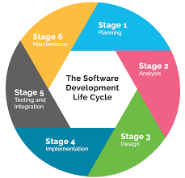

System Engineering
Hello, I'm Victor Camacaro, systems engineer from Venezuela, junior dev and I'm here to tell you something, many years ago when I started studying this career I asked myself what systems engineering was. I wondered was it the same as computer science, it was computing, it was pure programming It was to repair computers, because the answer was yes and no, and even less so after a teacher told us that systems engineering covered everything, that it went beyond the world of computing and about systems in general. One felt that then systems engineers know everything about systems in general."
Little by little, as my degree progressed, I understood that it was systems engineering. Now I usually meet people on the street or wherever I go and they ask me what I am and what I do, and when I tell them they don't really know what it is, that's why I come to explain what Systems Engineering is and how it is in almost everything. that we know and is applied in many areas.
There are many meanings that we can find on the web about what systems engineering is, which originally comes from systems theory and emerged in the field of biology , yes, even if you don't believe it, In 1950, the Austrian biologist Ludwig von Bertalanffy He proposed the general theory of systems itself, exposing its foundations, its development and its applications.
According to NASA, "systems engineering" is defined as a methodical, multidisciplinary approach to the design, implementation, technical management, operations and retirement of a system.

But for NASA it is important to emphasize what a system is, and it is important to know it because to understand well what we are talking about, it is necessary to know what is about. A “system” is the combination of elements that work together to produce the capacity necessary to satisfy a need. The elements include all hardware, software, equipment, facilities, personnel, processes and procedures necessary for this purpose; that is, everything necessary to produce results at the system level. The results include system-level qualities, properties, characteristics, functions, behavior, and performance. The value added by the system as a whole, beyond that contributed independently by the parties, is created primarily by the relationship between the parties; that is, how they are interconnected. It is a way of looking at the “big picture” when making technical decisions.
Well, for NASA, in a few words, Systems engineering is the art and science of developing an operable system capable of meeting requirements within often opposed constraints. Systems engineering is a holistic, integrative discipline, wherein the contributions of structural engineers, electrical engineers, mechanism designers, power engineers, human factors engineers, and many more disciplines are evaluated and balanced, one against another, to produce a coherent whole that is not dominated by the perspective of a single discipline.
For Wikipedia, the online encyclopedia, systems engineering is an interdisciplinary field of engineering and engineering management that focuses on how to design, integrate, and manage complex systems over their life cycles. At its core, systems engineering utilizes systems thinking principles to organize this body of knowledge. The individual outcome of such efforts, an engineered system, can be defined as a combination of components that work in synergy to collectively perform a useful function,and like that, many concepts you will find on the internet, now there is something in common that you will see and it is the system development life cycle that must be present when creating a system,
The system development life cycle is a systematic approach that organizes the different stages involved in the construction and maintenance of information systems. This approach provides a framework for planning, structuring, and controlling the software development process. Although there are several SDLC methodologies, many share key phases.
Planning Phase :

In this initial stage of the system development life cycle, project objectives are established, necessary resources are identified, and a detailed plan is developed. Teams define the scope of the project, estimate time and costs, and establish a work schedule.
Analysis Phase

During the analysis phase, system requirements are collected and evaluated. Systems analysts interact with end users and other stakeholders to fully understand needs and expectations. Detailed documents are created that describe the required functionality and objectives of the system.
Design Phase :

The design phase focuses on creating the system architecture based on the requirements established in the analysis phase. Flowcharts, data models are developed and decisions are made about the technological infrastructure. The goal is to define how the system will work and what it will look like.
Development Phase :

In this stage of the system development life cycle, programmers and software developers write system code according to design specifications. Effective construction of the system is carried out, and individual modules are integrated to form a complete system.
Testing Phase :

The testing phase is crucial to ensure that the system works as intended and meets the requirements defined in the previous phases. Unit, integration and system tests are performed to identify and correct possible errors and ensure system stability.
Implementation Phase:

At this stage of the system development life cycle, the system is put into operation. Installation and training of personnel is carried out so that they can use the new system effectively. The transition from the old system to the new can be carried out in phases or all at once, depending on the approach taken.
Maintenance Phase :

The system development life cycle does not end with deployment. The maintenance phase focuses on fixing errors, making improvements, and adapting to changes in user requirements. This phase may extend over a significant period to ensure continued functionality of the system.
As you see these phases are according to the community in general is essential for successful information systems development. By understanding and applying its phases, developers can create robust and efficient systems that drive progress in the digital age.
 After saying all this, let's go to where it applies, mainly the most important thing, because if we are describing what it is, let's say why it is important, where it is used and who uses it, and here lies the best thing for those who are graduates and work This covers practically all work areas, from education to the development of educational platforms that facilitate course management, the distribution of materials and communication between students and teachers to telecommunications, if they are in charge of the planning, design and management of networks, and thus ensure that you receive the Internet, it was a joke but it is true that they are partly responsible and in industries,
After saying all this, let's go to where it applies, mainly the most important thing, because if we are describing what it is, let's say why it is important, where it is used and who uses it, and here lies the best thing for those who are graduates and work This covers practically all work areas, from education to the development of educational platforms that facilitate course management, the distribution of materials and communication between students and teachers to telecommunications, if they are in charge of the planning, design and management of networks, and thus ensure that you receive the Internet, it was a joke but it is true that they are partly responsible and in industries,
they design and manage systems that control automated industrial processes, such as in factories or power plants and I can go on and on, And in the apps that have become essential for today's society, we all use apps on our phones, either on a social network, to buy clothes, use the map, buy tickets or book a hotel, because in everything we there is systems engineering and that is where its importance lies, it makes our lives better, so as a final piece of advice I would like to encourage young people or those who are interested in creating and improving systems and finding solutions to complex life problems. Study and enter the beautiful world of this career as I did years ago and I do not regret having done it, without forgetting that the degree pays well, without anything else to add, thank you for reading I hope you have learned, until next time.